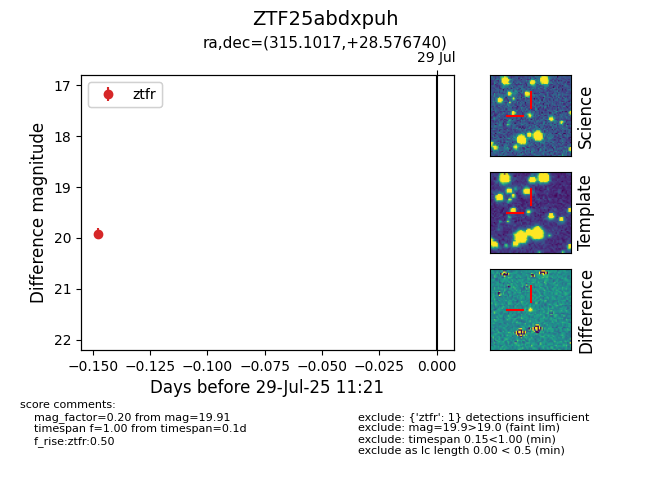

Target ZTF25abdxpuh at 2025-07-29 11:21, see:
FINK: fink-portal.org/ZTF25abdxpuh
Lasair: lasair-ztf.lsst.ac.uk/objects/ZTF25abdxpuh
ALeRCE: alerce.online/object/ZTF25abdxpuh
alt names
ZTF25abdxpuh (ztf,fink)
coordinates:
equatorial (ra, dec) = (315.1017,+28.57674)
galactic (l, b) = (73.6527,-11.46988)
photometry
last ztfr=19.91
1 ztfr detections
